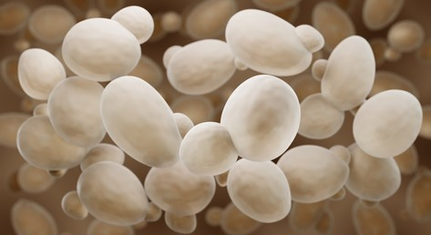
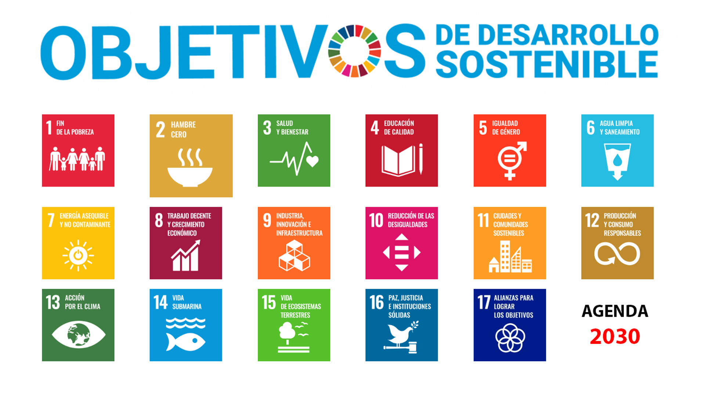
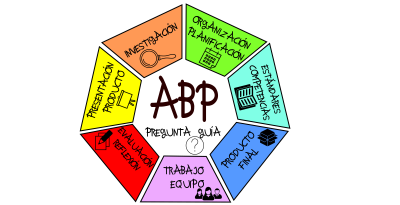
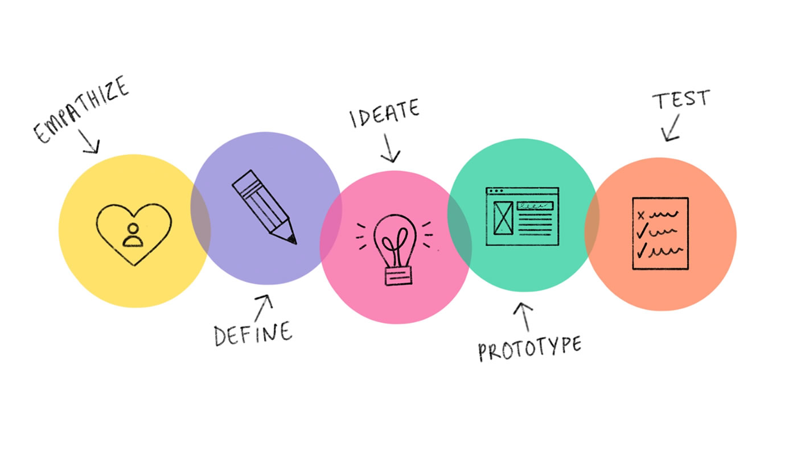
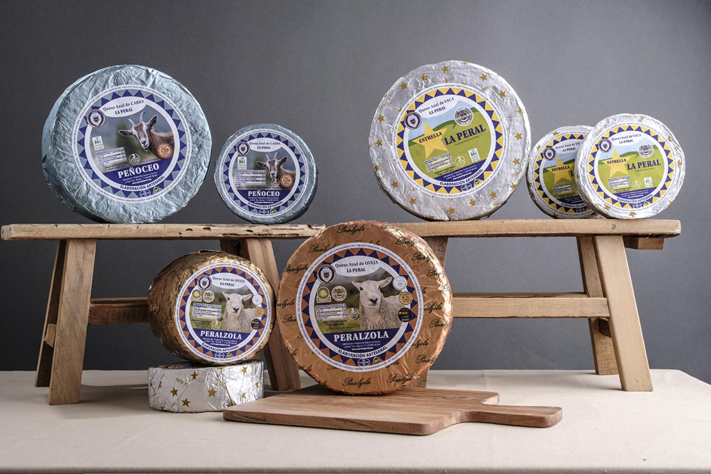

FermentARTE
Se va a desarrollar una situación de aprendizaje (SdA) que incluye al alumnado del Ciclo Formativo de Grado Medio Elaboración de Productos Alimenticios del IES Escultor Juan de Villanueva.

Se va a desarrollar una situación de aprendizaje (SdA) que incluye al alumnado del Ciclo Formativo de Grado Medio Elaboración de Productos Alimenticios del IES Escultor Juan de Villanueva.

La presente SdA está dirigida al alumnado de primer y segundo curso del Ciclo Formativo de Grado Medio de Formación Profesional de Elaboración de Productos Alimenticios (EPA) del IES Escultor Juan de Villanueva de Pola de Siero.
Los módulos en los que se trabajarán diferentes aspectos de la SdA son los siguientes. En el primer curso de CFGM EPA:
Para la realización de las distintas tareas de la SdA se distribuirá al alumnado en agrupamientos diferentes según el tipo de tarea que se vaya a desarrollar. Estos distintos agrupamientos tratan de adaptarse al trabajo requerido en cada una de las diferentes tareas, pero además, pretende que la SdA responda a una situación educativa concreta con unas necesidades determinadas y siempre desde la perspectiva de una escuela inclusiva, partiendo del Diseño Universal de Aprendizaje (DUA). Por ello, es viable para todo el alumnado, y flexible, ya que se podrá revisar y modificar según sea necesario.
Enumeramos los agrupamientos:
| Individual | |
| Gran grupo - grupo clase | |
| Trabajo en parejas |
En cuanto a los espacios que se utilizarán en el desarrollo de la SdA son los siguientes:
Se van a organizar las sesiones de la siguiente manera:
| Tarea | Nº Sesiones | Agrupamiento | Espacio |
|
Presentación del reto. Lluvia de ideas. Visionado de vídeo introductorio. Inicio de investigación guiada. |
1 | Gran grupo | Aula ordinaria |
| Estudio de las elaboraciones de productos fermentados | 1 | Gran grupo | Aula ordinaria / Aula informática |
| Elaboración de productos fermentados: yogur, pan, chucrut, kombucha y chorizos | 5 | Parejas | Planta piloto |
| Presentación del informe de las elaboraciones | 1 | Individual | Aula ordinaria |
| Investigación sobre el beneficio del consumo de productos fermentados | 2 | Individual | Aula informática |
Para la realización de las distintas tareas asociadas a la SdA utilizaremos las siguientes herramientas digitales:
El objetivo es que el alumnado comprenda la fermentación como proceso microbiano controlado que permite conservar y transformar alimentos, aplicando saberes de microbiología y parámetros tecnológicos.
Además, se busca que desarrollen competencia digital, comunicación científica y trabajo colaborativo mediante la creación de productos divulgativos.
La realización práctica de productos fermentados permite comprender procesos reales de la industria alimentaria, analizar parámetros fundamentales para garantizar la inocuidad y descubrir los beneficios nutricionales de estos alimentos para la salud humana.
La implementación de esta SdA tendrá un impacto significativo en el desarrollo académico, profesional y personal del alumnado.
En primer lugar, permitirá comprender en profundidad un proceso biotecnológico esencial en la industria alimentaria, conectando la teoría con la práctica real mediante la elaboración de productos fermentados. Esta experiencia práctica favorece un aprendizaje significativo, pues el alumnado observa directamente la acción de los microorganismos, analiza parámetros críticos como el pH o la temperatura, y entiende cómo estos influyen en la seguridad y calidad del alimento.
La SdA también impactará positivamente en el desarrollo de la autonomía, la responsabilidad en el trabajo cooperativo y la toma de decisiones informadas, gracias al trabajo por tareas y al aprendizaje basado en retos. Al participar en la elaboración de fermentados, el alumnado se enfrentará a situaciones reales de manipulación, control y verificación del proceso, reforzando así su perfil como futuros operarios y técnicos de la industria alimentaria.
Por otra parte, el análisis del beneficio del consumo de alimentos fermentados contribuirá a fomentar hábitos de vida saludables, mejorar su cultura alimentaria y valorar el papel de la microbiota y la conservación natural, lo que incide en su bienestar y conciencia nutricional.
Esta situación se vincula con los siguientes ODS:

Y con los siguientes retos del sXXI:
OPERACIONES DE ACONDICIONADO DE MATERIAS PRIMAS (OAMP 1ºEPA)
| RESULTADO DE APRENDIZAJE | CRITERIO DE EVALUACIÓN |
| RA1: Selecciona las materias primas, describiendo las técnicas y procedimientos aplicados en función de las características del producto que se va a elaborar |
1.7- Se han seleccionado las materias primas por tamaño, forma, peso y otras características, realizándose los controles básicos. 1.9- Se han aplicado medidas de higiene y seguridad alimentaria durante la selección de las materias primas. 1.11- Se han establecido los hábitos y las condiciones higiénicas de los operarios que realizan la manipulación de las materias primas. |
| RA2: Limpia las materias primas caracterizando los procedimientos y protocolos aplicados | 2.7- Se han limpiado las materias primas con métodos eficientes desde el punto de vista tecnológico y económico, realizándose los controles básicos. |
TRATAMIENTOS DE TRANSFORMACIÓN Y CONSERVACIÓN (TTRCO 1ºEPA)
| RESULTADO DE APRENDIZAJE | CRITERIOS DE EVALUACIÓN |
| RA4: Conserva productos alimenticios mediante otros tratamientos reconociendo sus fundamentos y mecanismos de actuación. |
4.6- Se han fermentado y ahumado productos alimenticios, describiéndose las transformaciones físicas, químicas y organolépticas que han tenido lugar. 4.7- Se han incorporado sustancias conservantes en la formulación de los productos alimenticios, caracterizándose su función tecnológica. 4.9- Se han adoptado medidas de higiene y seguridad alimentaria durante la adición de sustancias conservantes. |
| RA5: Envasa productos elaborados, justificando el material y la técnica seleccionada. |
5.2- Se han relacionado los envases de uso alimentario con los productos que se van a envasar. 5.7- Se han cerrado los envases aplicándose el método más adecuado en función del tipo de envase y de las características del producto a envasar. 5.8- Se han envasado productos alimenticios en atmósferas pobres en oxígeno, justificándose su utilización. |
Cada módulo participante en la SdA evaluará, según sus programaciones respectivas, aquellos criterios de evaluación que correspondan a la presente SdA. Esta evaluación, de modo general, incluye:
| El primer contacto que el alumnado tiene con la SdA es una reunión en la que participan de manera activa. En un primer momento, el equipo docente plantea al alumnado el proyecto a realizar, en este caso la investigación de productos fermentados. Desde ese momento, es el alumnado quien toma el protagonismo absoluto. La consecución del objetivo final permite la evaluación de su desempeño a lo largo de todo el proceso. |  |
| El alumnado participa en grupos de trabajo cooperativo para sacar adelante las diferentes tareas asignadas a la SdA. Se establecen roles y se fijan objetivos claros de consecución, que pueden ser fácilmente evaluables por ellas y ellos. |
| En lugar de empezar con la solución o el producto de los alimentos fermentados, el proceso comienza con una inmersión profunda en el tema. Esta mentalidad equipa al alumnado con las herramientas para enfrentar la complejidad con optimismo y creatividad. |  |
El Proyecto de Salud y Consumo Responsable (SCORe), surge en el curso académico 2015-16 en el IES Escultor Juan de Villanueva con los siguientes objetivos:
Este es el logo del proyecto, una saludable manzana verde junto con las siglas del nombre del proyecto y ya sabes…. SUMA PUNTOS A TU SALUD!!!
A lo largo del curso se organizan por parte del Departamento de Industrias Alimentarias diferentes ponencias y master-class, impartidas por expertos en distintos temas relacionados con la elaboración de productos alimentarios. Entre ellas, se organiza una master-class de elaboración de productos lácteos y otra de panadería que aportan al alumnado los conocimientos y las destrezas adecuadas para la elaboración de yogures y productos de panadería.
Como parte de las actividades extraescolares, se contempla la visita a la quesería "La Peral", situada en Illas, Asturias. Allí el alumnado descubrirá el proceso de fabricación de estos quesos asturianos, paso a paso. Constituye una experiencia formativa de alto valor para el alumnado, ya que permite conectar los contenidos teóricos trabajados en el aula con la realidad productiva del sector lácteo.

| Título | FermentARTE |
|---|---|
| Descripción | Descripción de la SdA FermentARTE |
| Autoría | Esther Uriol Egido |
| Licencia | Creative Commons BY-SA 4.0 |
Este contenido fue creado con eXeLearning, el editor libre y de fuente abierta diseñado para crear recursos educativos.
Obra publicada con Licencia Creative Commons Reconocimiento Compartir igual 4.0